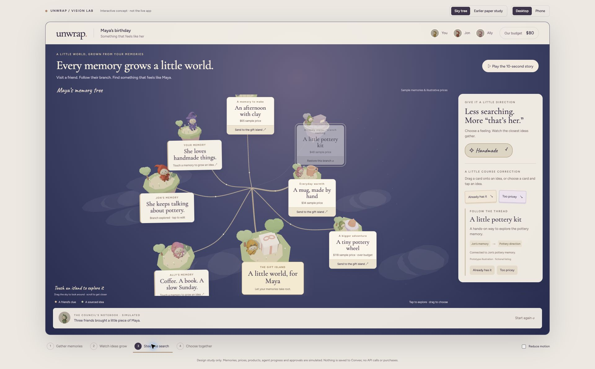
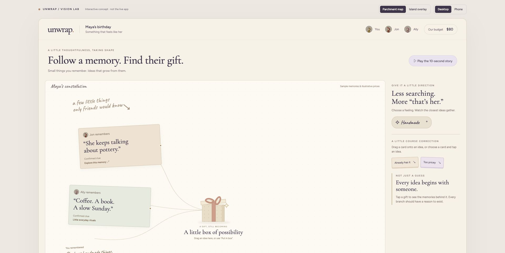
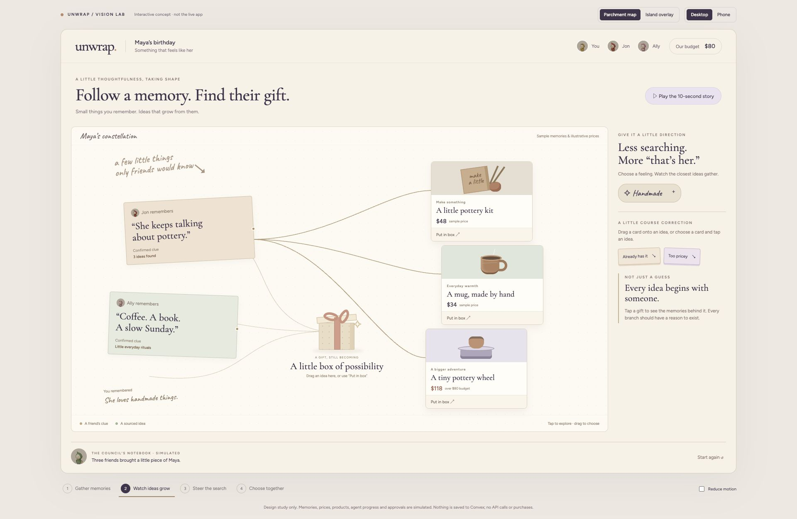
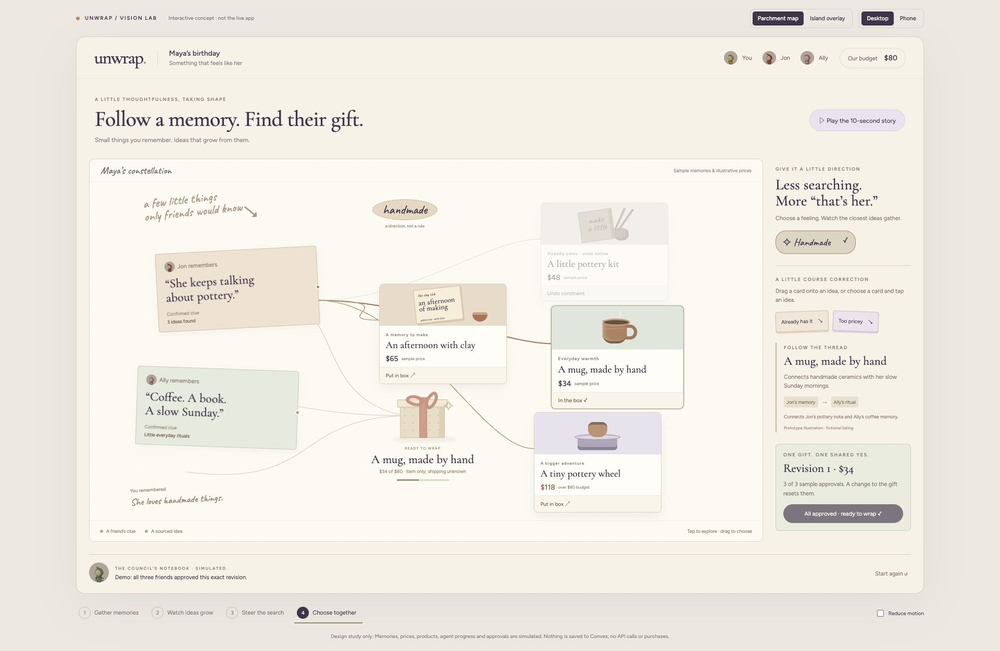
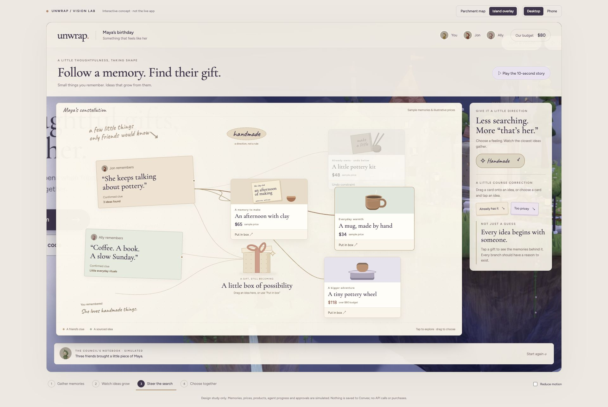
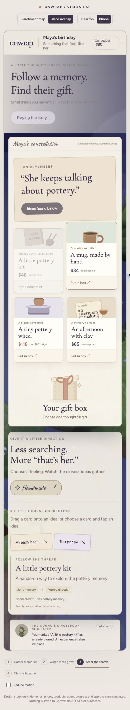

The current 3D sky-tree concept, followed by the earlier paper studies for comparison. All products, prices, collaboration and agent activity are simulated.

Real 3D scene and existing application character models. Memory edits, constraints and approvals are simulated.



Backdrop captured from the current application. This concept uses a static screenshot, not a live Three.js scene.